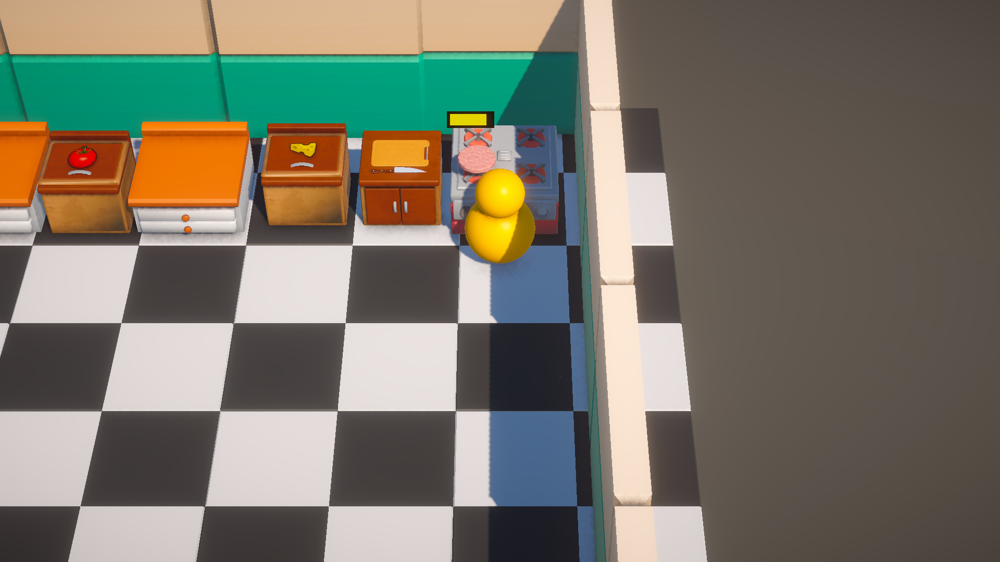
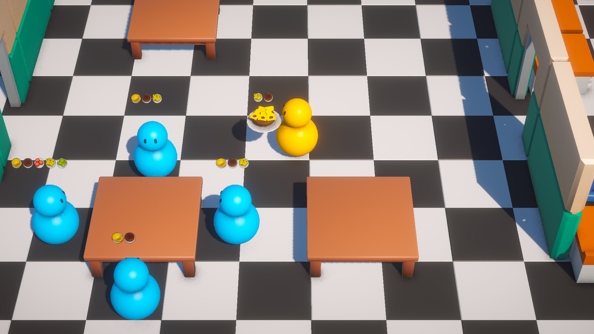

COZY CHAOS
Um simulador de gerenciamento estratégico e gerenciamento de tempo onde o jogador assume o controle total de um restaurante. O desafio combina a precisão técnica da culinária na cozinha, a criatividade do design de receitas únicas e a agilidade da logística de salão, equilibrando a satisfação do cliente com a maximização de lucros para a expansão do negócio.

Mecânicas do Jogo
O fluxo de jogo exige multitasking constante. Clique nos tópicos abaixo para expandir os detalhes de cada pilar mecânico:
Preparação na Cozinha
▼
Gerenciamento de tempo real em múltiplas estações de cocção (fogão, forno, corte). Cada ingrediente possui tempos de preparo distintos que exigem atenção para evitar desperdícios ou pratos queimados.
Criação de Receitas
▼
Um sistema sandbox que permite aos jogadores combinar diferentes ingredientes descobertos para criar pratos únicos. Receitas raras ou mais complexas atraem clientes críticos e geram maior margem de lucro.
Logística de Atendimento
▼
Sistema de pathfinding e priorização de ordens nas mesas. Entregar os pedidos dentro do limite de paciência de cada cliente dita o multiplicador de gorjetas e o nível de reputação do estabelecimento.
Progressão e Expansão
▼
Lógica econômica baseada na receita gerada. O dinheiro acumulado é reinvestido na compra de eletrodomésticos mais rápidos, contratação de assistentes automáticos e expansão física do espaço do restaurante.
Minhas Funções
Atuei no desenvolvimento técnico dos sistemas econômicos e na inteligência de comportamento dos clientes.
💻 PROGRAMAÇÃO (Sistemas e Economia)
▼
Implementação da máquina de estados para a paciência dos clientes e codificação do sistema de inventário e combinação de ingredientes. Desenvolvi o algoritmo que calcula o lucro e as atualizações de upgrades do restaurante de forma assíncrona.
📐 GAME DESIGN (UX e Balanceamento)
▼
Planejamento da curva de custos de ingredientes versus preço final dos pratos. Desenhei o fluxo de interface (UI/UX) para que o jogador consiga alternar rapidamente entre a visão da cozinha e a visão do salão sem perder o controle do ritmo de jogo.


Acesse o Projeto
Explore o protótipo jogável direto do browser ou analise a documentação completa de balanceamento matemático do jogo.
Jogar no Itch.io ↗ Ler o GDD do Jogo 📄Gameplay em Ação
Assista ao vídeo demonstrativo mostrando um dia inteiro de pico no restaurante, desde a abertura da cozinha até a contabilidade final de lucros.